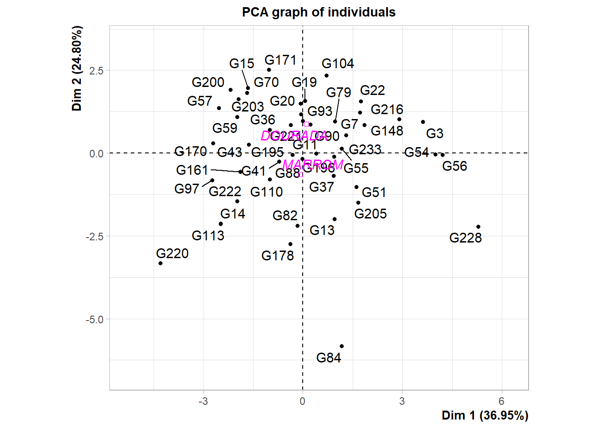

03: Análise de Componentes Principais para Caracterização e Priorização de Variáveis em Genótipos de Linho (Linum usitatissimum, L.)
1 Pacotes
2 PCA
df <-
import("data/data_pca.xlsx") |>
mutate(IC = MG / MC) |>
column_to_rownames("GEN")
# AP altura de planta (cm)
# AC altura de cápsula (cm)
# NR numero de ramificações
# MC massa de cápsula (g)
# MG massa de grãos (g)
# NC numero de capsulas
# NG numero de graos
# DC diametro de capsula
# LG largura de grao
# CG comprimento de grao3 Correlação
4 PCA
pca <- PCA(df, quali.sup = 1)

fviz_contrib(pca, "var", axes = 1:2)
fviz_pca_biplot(pca,
repel = TRUE,
habillage = 1)
ggsave("figs/biplot.jpg")5 Distribution
dfp <-
df |>
select(TIPO, NC, NG, CG, LG, IC) |>
pivot_longer(-TIPO)
ggplot(dfp, aes(value, y = TIPO, fill = TIPO)) +
geom_density_ridges(alpha = 0.8) +
facet_wrap(~name, scales = "free") +
labs(x = "Valor observado",
y = "Tipo de linhaça",
fill = "") +
theme(legend.position = "bottom",
panel.grid.minor = element_blank())
ggsave("figs/density_biplot.jpg")6 Section info
sessionInfo()
## R version 4.3.3 (2024-02-29 ucrt)
## Platform: x86_64-w64-mingw32/x64 (64-bit)
## Running under: Windows 11 x64 (build 22631)
##
## Matrix products: default
##
##
## locale:
## [1] LC_COLLATE=Portuguese_Brazil.utf8 LC_CTYPE=Portuguese_Brazil.utf8
## [3] LC_MONETARY=Portuguese_Brazil.utf8 LC_NUMERIC=C
## [5] LC_TIME=Portuguese_Brazil.utf8
##
## time zone: America/Sao_Paulo
## tzcode source: internal
##
## attached base packages:
## [1] stats graphics grDevices utils datasets methods base
##
## other attached packages:
## [1] ggridges_0.5.6 metan_1.18.0 caret_6.0-94 lattice_0.22-5
## [5] FactoMineR_2.11 factoextra_1.0.7 lubridate_1.9.3 forcats_1.0.0
## [9] stringr_1.5.1 dplyr_1.1.4 purrr_1.0.2 readr_2.1.5
## [13] tidyr_1.3.1 tibble_3.2.1 ggplot2_3.5.0 tidyverse_2.0.0
## [17] rio_1.0.1
##
## loaded via a namespace (and not attached):
## [1] mathjaxr_1.6-0 RColorBrewer_1.1-3 rstudioapi_0.16.0
## [4] jsonlite_1.8.8 magrittr_2.0.3 TH.data_1.1-2
## [7] estimability_1.5 farver_2.1.1 nloptr_2.0.3
## [10] rmarkdown_2.26 ragg_1.3.0 vctrs_0.6.5
## [13] minqa_1.2.6 rstatix_0.7.2 htmltools_0.5.8
## [16] broom_1.0.5 cellranger_1.1.0 pROC_1.18.5
## [19] parallelly_1.37.1 htmlwidgets_1.6.4 plyr_1.8.9
## [22] sandwich_3.1-0 emmeans_1.10.1 zoo_1.8-12
## [25] lifecycle_1.0.4 iterators_1.0.14 pkgconfig_2.0.3
## [28] Matrix_1.6-5 R6_2.5.1 fastmap_1.1.1
## [31] future_1.33.2 digest_0.6.35 numDeriv_2016.8-1.1
## [34] colorspace_2.1-0 GGally_2.2.1 patchwork_1.2.0
## [37] textshaping_0.3.7 ggpubr_0.6.0 labeling_0.4.3
## [40] fansi_1.0.6 timechange_0.3.0 abind_1.4-5
## [43] polyclip_1.10-6 compiler_4.3.3 withr_3.0.0
## [46] backports_1.4.1 carData_3.0-5 ggstats_0.6.0
## [49] ggforce_0.4.2 R.utils_2.12.3 ggsignif_0.6.4
## [52] MASS_7.3-60.0.1 lava_1.8.0 scatterplot3d_0.3-44
## [55] flashClust_1.01-2 ModelMetrics_1.2.2.2 tools_4.3.3
## [58] future.apply_1.11.2 nnet_7.3-19 R.oo_1.26.0
## [61] glue_1.7.0 nlme_3.1-164 grid_4.3.3
## [64] cluster_2.1.6 reshape2_1.4.4 generics_0.1.3
## [67] recipes_1.0.10 gtable_0.3.5 tzdb_0.4.0
## [70] R.methodsS3_1.8.2 class_7.3-22 data.table_1.15.4
## [73] hms_1.1.3 car_3.1-2 utf8_1.2.4
## [76] ggrepel_0.9.5 foreach_1.5.2 pillar_1.9.0
## [79] splines_4.3.3 tweenr_2.0.3 survival_3.5-8
## [82] tidyselect_1.2.1 knitr_1.46 stats4_4.3.3
## [85] xfun_0.43 hardhat_1.3.1 timeDate_4032.109
## [88] DT_0.33 stringi_1.8.3 yaml_2.3.8
## [91] boot_1.3-29 evaluate_0.23 codetools_0.2-19
## [94] multcompView_0.1-10 cli_3.6.1 rpart_4.1.23
## [97] xtable_1.8-4 systemfonts_1.0.6 munsell_0.5.1
## [100] Rcpp_1.0.12 readxl_1.4.3 globals_0.16.3
## [103] coda_0.19-4.1 parallel_4.3.3 leaps_3.1
## [106] gower_1.0.1 lme4_1.1-35.2 listenv_0.9.1
## [109] mvtnorm_1.2-4 ipred_0.9-14 lmerTest_3.1-3
## [112] scales_1.3.0 prodlim_2023.08.28 rlang_1.1.3
## [115] multcomp_1.4-25